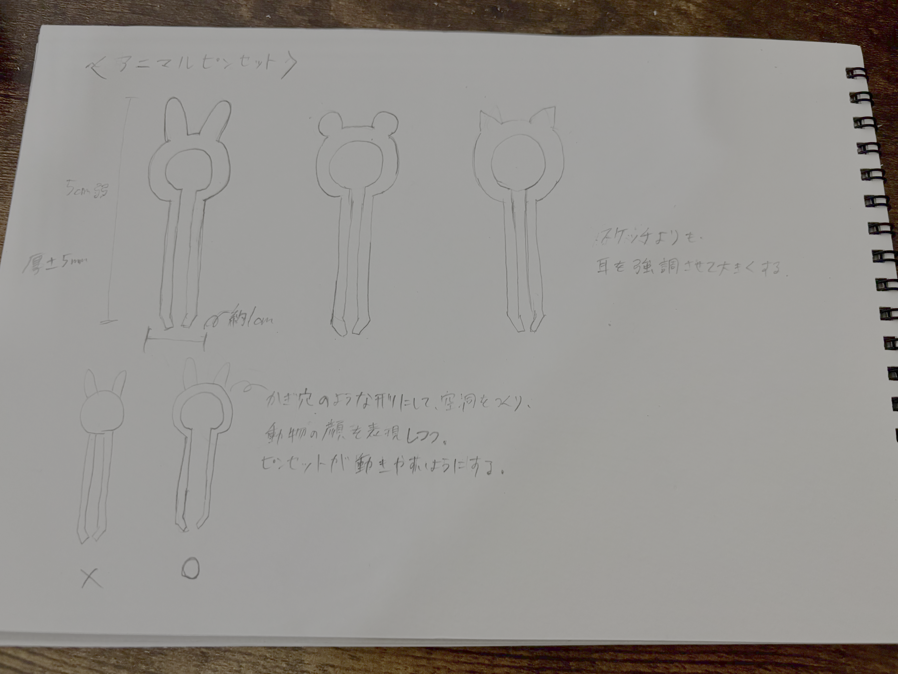

アニマルピンセット


うさぎ、ねこ、くまの耳を取り付けたピンセットを作りました。
初めはうさぎのピンセットだけを作ろうと思っていましたが、他の動物のピンセットも作って、
アニマルピンセットとしてシリーズ化させたらとても可愛いと思ったのでねことくまのピンセットも制作することにしました。
この作品を作ろうと思った理由
大抵の場合、ピンセットは細かい作業をするためのツールとしてに重宝されていて地味なデザインになりがちです。
なので、使う楽しさを感じられて愛着が持てるピンセットを作りたいと思いました。
実際、ピンセットを作った後、愛着が湧いて、自分の中でとてもお気に入になりました。
制作方法
うさぎとねこの耳はスケッチのフィット点スプラインを使用し、なるべく全体的に丸みが出るように描きました。くまの耳は円を使いました。
耳をチャームポイントにしたいので、顔と同じくらいか顔より大きくスケッチして目立つように描きました。
顔の部分を空洞にした方が、ピンセットが開閉しやすと思ったので鍵穴のような形にしました。